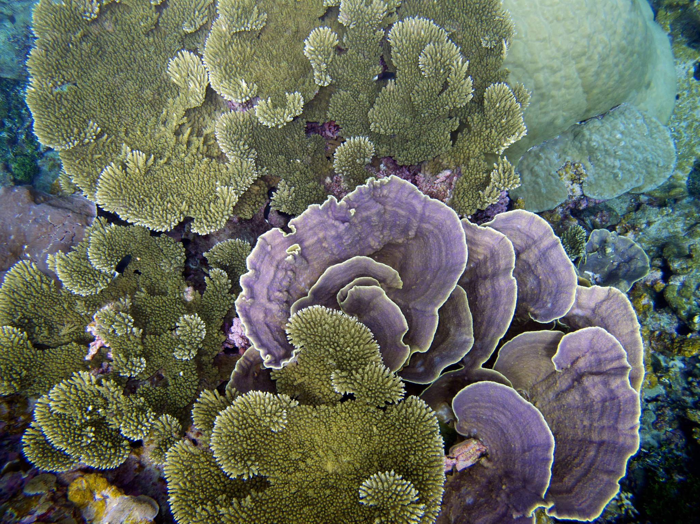
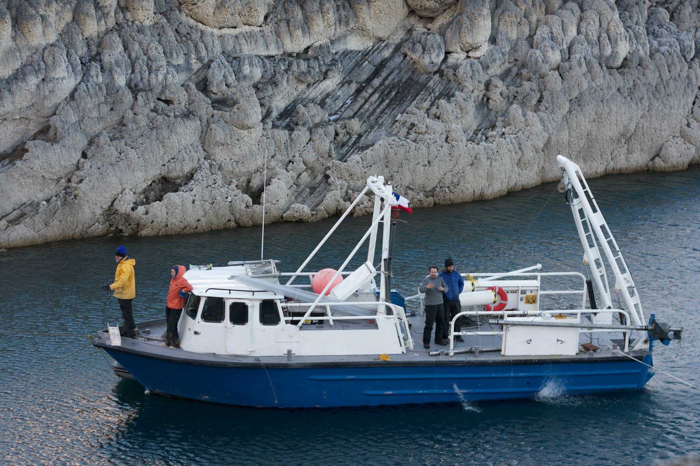

This work uses remotely sensed data to evaluate bleaching events on coral reefs in real-time, forecast the likelihood of bleaching events in the near future using a machine learned, and teases apart environmental drivers of the problem.
The project takes advantage of technological advances to leverage both the power of modern neural network systems, and large remote sensing datasets.
The model's predictions may be used by ecologists to gain a better understanding of global reef health on a daily basis, reef managers and governments to better protect their local reefs, and the scientific community as we better understand the drivers of mass bleaching events.

The southern westerlies are the most energetic and consistent winds on Earth driving upwelling of CO2-rich water in the Southern Ocean. Any shift in the position or strength of the westerlies has the potential to shift the Southern Ocean from a net-carbon sink to source. Our study uses stable isotope analysis of sediments in Lago Sarmiento, a large closed-basin lake in Southern Patagonia. This site is uniquely suited to capture variance in large-scale weather patterns in the subantarctic.
During the previous field season we collected sediment cores, conducted CTD casts, and recorded a seismic survey of the basin. While the majority of cores are still in the process of analysis, we have created a numerical model of the Lago Sarmiento lake system. This allows for simulation of the lake response to differing environmental conditions. This model uses inputs of major climatic parameters in order to determine the hydrologic balance. Here we can analyze the critical factors which play the largest roles in regulating the lake system. We are further working towards a full hydrologic isotope mass balance model which can compute the isotopic composition of the lake waters. Modeling the Sarmiento system in this way will allow us to adjust climatic variables and quickly observe the effect that they have on the isotopic signature of the lake.